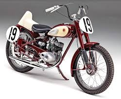

Yamaha Motor Company
Yamaha Motor Company fue fundada en 1955 en Japón, como una división de Yamaha Corporation, inicialmente enfocada en la fabricación de motocicletas.
Con un legado de precisión tecnológica y pasión por el rendimiento, Yamaha se ha convertido en uno de los principales fabricantes mundiales de motos, embarcaciones y motores.
- Tecnología avanzada en motores de 2 y 4 tiempos para máximo rendimiento.
- Innovaciones en diseño ergonómico para comodidad y control del piloto.
- Amplia gama de vehículos desde deportivas hasta scooters y motos de aventura.
Yamaha es reconocida globalmente por su éxito en competencias de motociclismo, incluyendo MotoGP y Rally Dakar, y su dedicación continua a la innovación y calidad.
